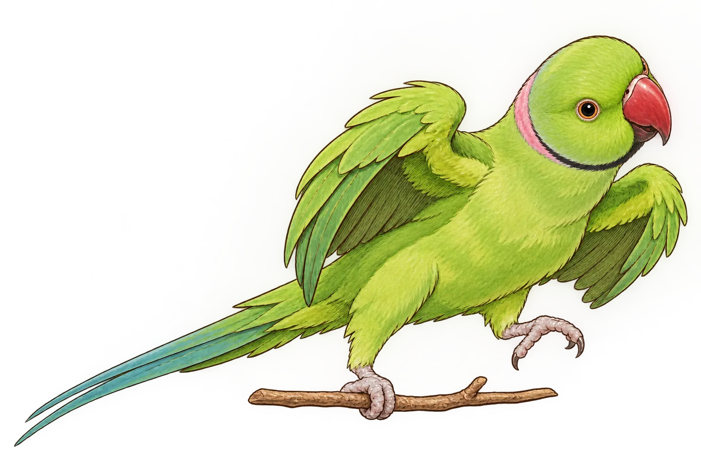
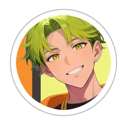
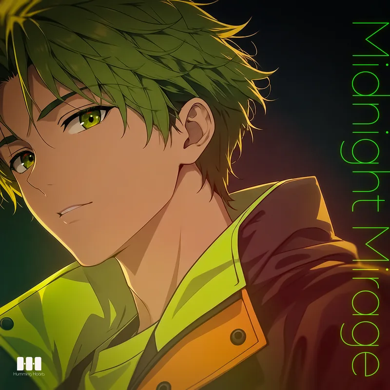

今夜は朝まで踊りあかそうよヤなこと忘れてさ


ワカケホンセイインコRose-ringed Parakeet Prisméa
Prisméa誰にでも分け隔てなく接する、いわゆる陽キャ。羽響の音をいち早く面白がり、頼み込んで曲を書いてもらうことになった張本人。
- 誕生日
- 8月15日
- 身長
- 173cm
- 年齢
- 22歳
- 趣味
- クラブ、ダンス
- 好きなもの
- ハンバーガー
- 苦手なもの
- 沈黙
Member


都会の公園なら会えるかも？ よく集まってワイワイやってるからね
- 区分
- 外来種
- 地域
- 東京とその周り
- いそうな場所
- 木の多い住宅地・大きな公園
見つけやすさ
✦✦✦地域限定
会える時期今月も会える
北海道
本州・四国関東の一部
九州
オスとメスの見分け方
首輪っぽいのがあったらメンズ！ わかりやすいっしょ？
Tips見分けのヒント
夕方、大きな木に大群で集まってねぐらをとる
Trivia豆知識
ペットとして持ち込まれたものが野生化し、約50年かけて都市に定着した
Note中の人メモ
東京の緑地で群れで見かけました。なかなかの迫力でした…
Profileプロフィール
誰にでも分け隔てなく接する、いわゆる陽キャ。羽響の音をいち早く面白がり、頼み込んで曲を書いてもらうことになった張本人。
- 誕生日
- 8月15日
- 身長
- 173cm
- 年齢
- 22歳
- 趣味
- クラブ、ダンス
- 好きなもの
- ハンバーガー
- 苦手なもの
- 沈黙
Member
Motif Birdワカケホンセイインコ
都会の公園なら会えるかも？ よく集まってワイワイやってるからね
- 区分
- 外来種
- 地域
- 東京とその周り
- いそうな場所
- 木の多い住宅地・大きな公園
見つけやすさ
✦✦✦地域限定
会える時期今月も会える
北海道
本州・四国関東の一部
九州
オスとメスの見分け方
首輪っぽいのがあったらメンズ！ わかりやすいっしょ？
Tips見分けのヒント
夕方、大きな木に大群で集まってねぐらをとる
Trivia豆知識
ペットとして持ち込まれたものが野生化し、約50年かけて都市に定着した
Note中の人メモ
東京の緑地で群れで見かけました。なかなかの迫力でした…
Songs参加曲

月日の奏

Midnight Mirage